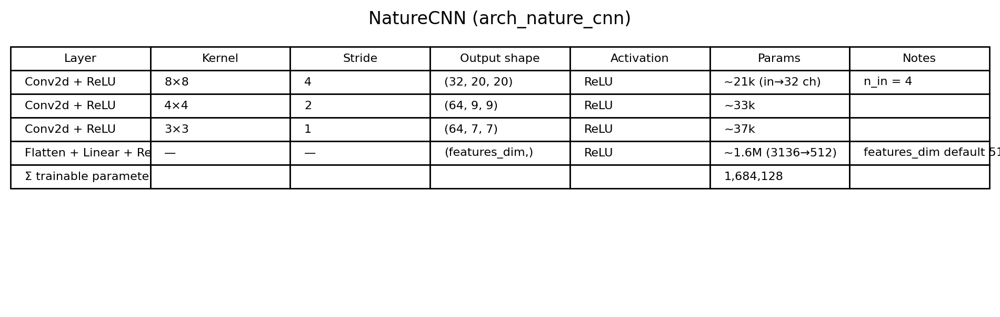
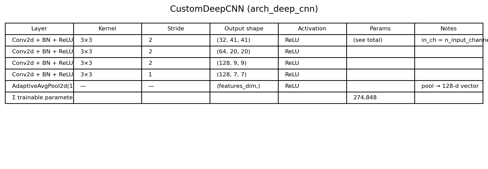
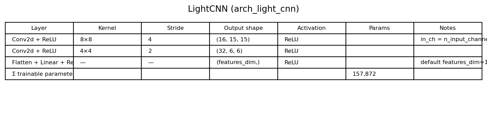
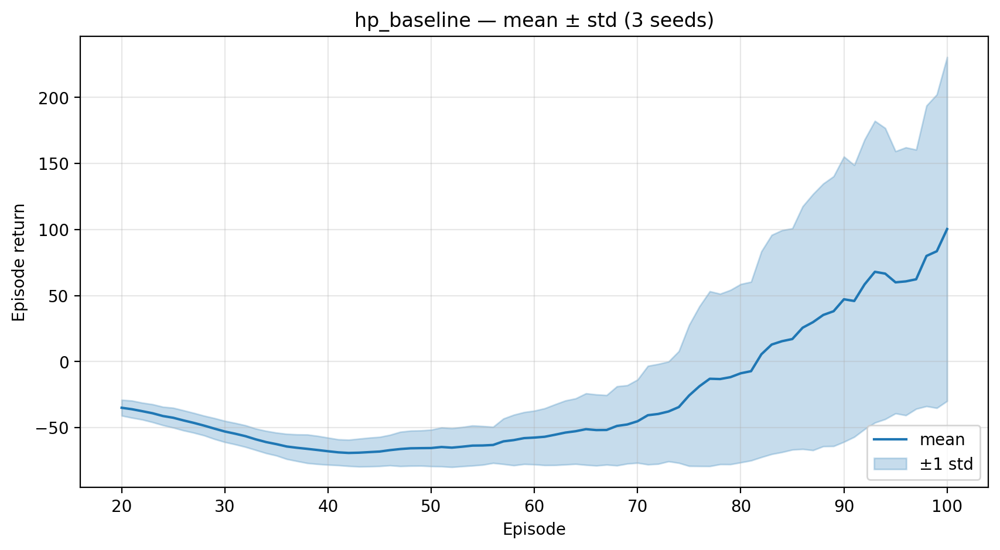
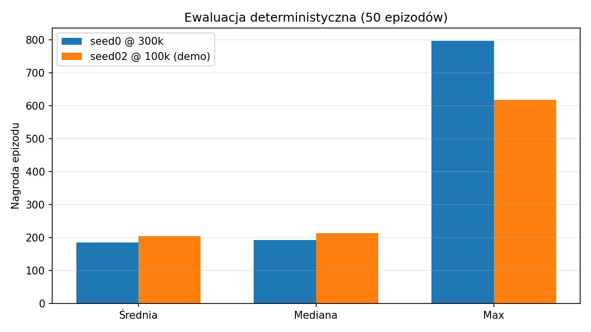
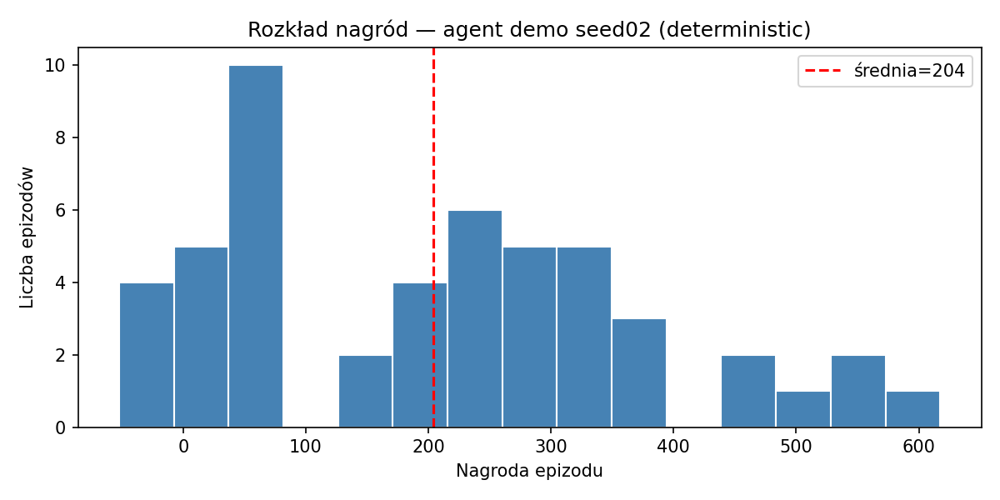
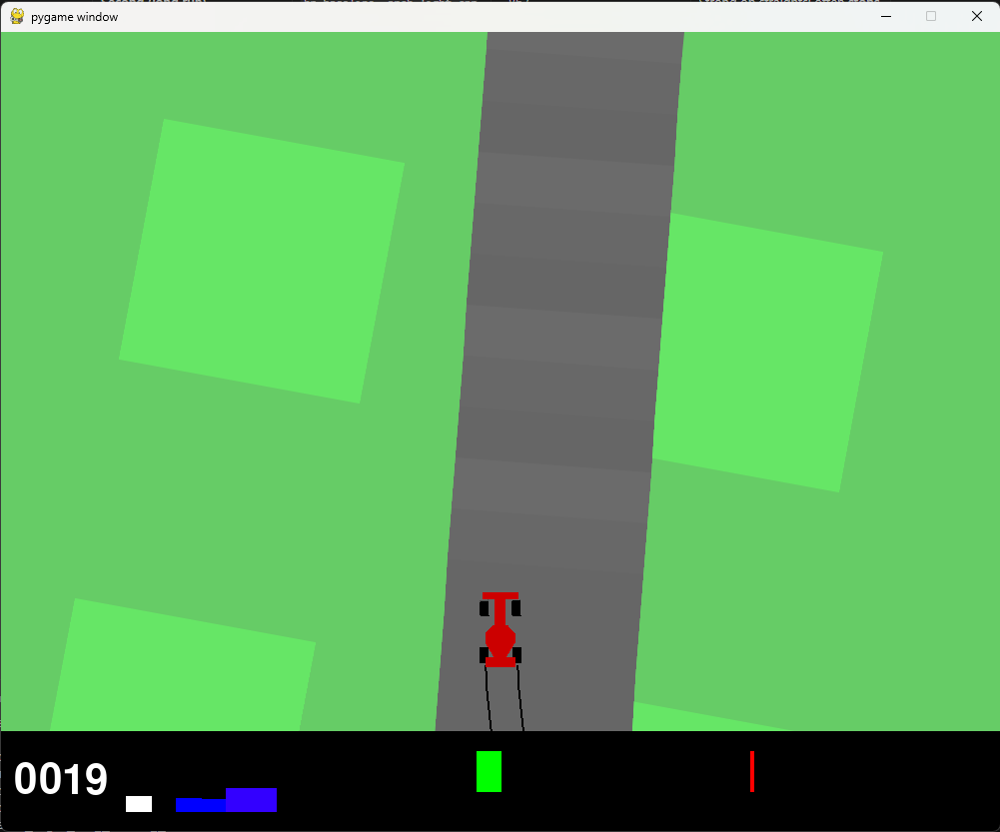
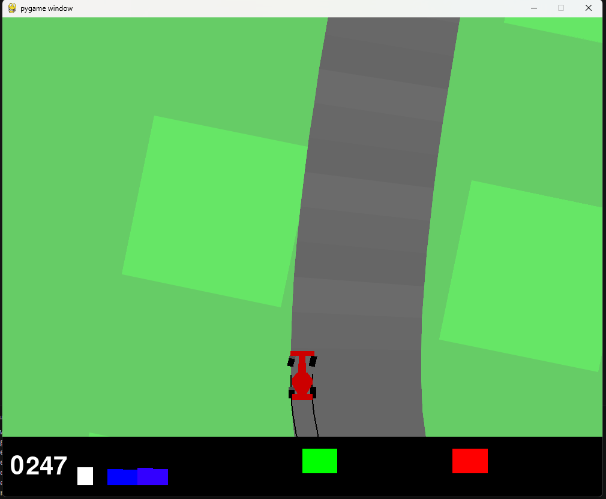
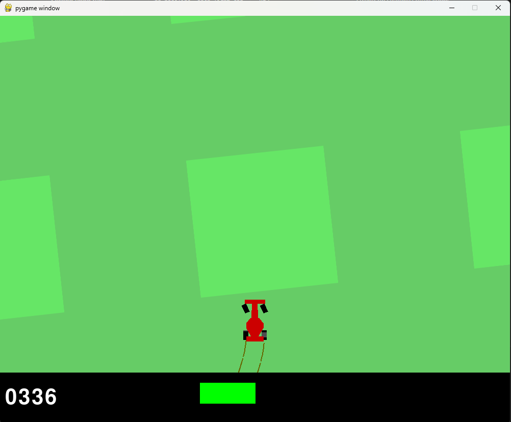

| Autor 1 | Autor 2 | |
|---|---|---|
| Imię i nazwisko | Patryk Chamera | Karol Bystrek |
| pchamera@student.agh.edu.pl | karbystrek@student.agh.edu.pl |
Przedmiot: Inteligencja obliczeniowa
Temat: Reinforcement learning w ciągłej przestrzeni akcji i obserwacji
Repozytorium: racing-agent-gymnasium
Biblioteka RL: Stable-Baselines3
Środowisko: Gymnasium CarRacing-v3
Celem projektu było zaimplementowanie i wytrenowanie agenta uczącego się przez wzmacnianie w ciągłej przestrzeni akcji, z obserwacją wizualną (obraz), oraz przygotowanie raportu obejmującego: opis środowiska i algorytmu, porównanie zestawów hiperparametrów, porównanie architektur sieci CNN, pomiar czasu uczenia oraz ewaluację deterministyczną najlepszego agenta.
Projekt jest kontynuacją wcześniejszej pracy w przestrzeniach dyskretnych (crossy-road-gymnasium, PPO). Tym razem zastosowaliśmy algorytm off-policy (SAC) oraz politykę CnnPolicy ze względu na obserwacje pikselowe.
CarRacing-v3CarRacing-v3 (Gymnasium / Box2D) to klasyczne środowisko wyścigowe z widokiem z góry. Tor jest losowany w każdym epizodzie, co wymusza generalizację, a nie zapamiętanie jednej trasy.
Przestrzeń obserwacji: Box(0, 255, (96, 96, 3), uint8) — kolorowy obraz RGB 96×96 px.
Przestrzeń akcji (ciągła): Box([-1, 0, 0], [1, 1, 1], (3,), float32):
Funkcja nagrody: w każdej klatce agent otrzymuje ok. −0,1 (kara za czas) oraz dodatni składnik za nowo odwiedzone fragmenty toru; powtórne najechanie na te same kafelki daje silną karę. Nagroda jest więc gęsta, ale wymaga utrzymania się na torze i pokonywania łuków.
Koniec epizodu: ukończenie okrążenia lub limit 1000 kroków.
W repozytorium (src/racing_agent/env/wrappers.py, make_env.py) stosujemy kolejno:
(96, 96, 3) → (96, 96).Wyjście do CnnPolicy ma postać C×H×W (uint8), zgodnie z konwencją SB3.
Na podstawie runów @ 100 000 kroków (GPU T4, Kaggle, arch_light_cnn):
| Metryka | Wartość |
|---|---|
| Średni czas kroku | ~0,025 s |
| Średni czas epizodu | ~1263 s (~21 min) — epizody treningowe liczone przez Monitor SB3 |
| Średni czas ściany (wall-clock) / 100k kroków | ~2529 s (~42 min) |
Uwaga: czas epizodu w Monitorze obejmuje pełne interakcje treningowe (w tym aktualizacje SAC), dlatego jest dłuższy niż sam rollout w podglądzie.
Soft Actor-Critic (SAC) to algorytm off-policy dla ciągłych akcji, łączący:
W Stable-Baselines3 używamy klasy SAC z polityką **CnnPolicy**: osobny ekstraktor cech CNN (NatureCNN / CustomDeepCNN / LightCNN) oraz głowy aktora i krytyków MLP.
Kluczowe cechy konfiguracji SB3 w naszym projekcie:
ent_coef="auto" — automatyczna regulacja temperatury,train_freq, gradient_steps, batch_size, tau — sterowanie tempem uczenia i stabilnością,**best_model.zip** przez callback ewaluacyjny (EvalSaveBestCallback).Cały agent można potraktować jak kierowcę autonomicznego, złożonego z kilku sieci neuronowych:
| Rola w analogii | Element w SAC | Co robi |
|---|---|---|
| Oczy | CNN (np. LightCNN) | Patrzy na obraz z gry (klatki toru + samochód), wyciąga z pikseli wektor cech — np. 128 liczb opisujących sytuację na torze |
| Decyzja | Aktor (MLP) | Na podstawie cech wybiera akcję: kierownica, gaz, hamulec (3 liczby ciągłe) |
| Ocena | Krytyk (2× MLP, Q1 i Q2) | Ocenia parę (stan, akcja): „czy ta decyzja w tej sytuacji da dobrą nagrodę w dłuższej perspektywie?” |
| Trener | Algorytm SAC | Porównuje decyzje z nagrodami ze środowiska i poprawia wagi CNN, aktora i krytyków |
Przepływ danych podczas treningu:
CarRacing-v3 zwraca obraz (po preprocessingu: skala szarości, resize, frame stack).Ważne: nagrody i kary nie są „w środku” sieci — nadaje je symulator gry. Sieci używają ich wyłącznie jako sygnału do uczenia. Przy podglądzie (watch_agent.py) działa tylko ścieżka obraz → CNN → aktor → akcja; krytyk nie steruje samochodem.
Skład „Soft” w nazwie oznacza maksymalizację entropii: oprócz wysokiej nagrody SAC nagradza też pewną losowość akcji, żeby agent nie utknął w jednej, złej strategii. Parametr α (ent_coef="auto" w SB3) balansuje między zbiorem nagrody a eksploracją.
W Projekt 4 (Crossy Road) używaliśmy PPO (on-policy) na wektorowej obserwacji. Tutaj obserwacja to obraz, a rollout jest kosztowny — SAC z buforem doświadczeń lepiej wykorzystuje zebrane dane. Ciągła akcja (sterowanie + gaz + hamulec) jest naturalnym zastosowaniem SAC w SB3.
| Moduł | Ścieżka | Rola |
|---|---|---|
| Fabryka środowiska | src/racing_agent/env/make_env.py |
make_car_racing(), make_car_racing_single() |
| Wrappery wizualne | src/racing_agent/env/wrappers.py |
grayscale, resize, frame stack |
| Polityki CNN | src/racing_agent/policies/ |
NatureCNN, CustomDeepCNN, LightCNN |
| Trening | src/racing_agent/training/train.py |
klasa Trainer, SAC, callbacks |
| Hiperparametry | configs/hp_*.yaml, configs/arch_*.yaml |
YAML → merge → SAC |
| Eksperymenty | scripts/run_experiment.py |
siatka HP × seedy |
| Krzywe uczenia | scripts/plot_curves.py |
średnia ± std, timing_table.csv |
| Podgląd na żywo | scripts/watch_agent.py |
pygame, render_mode="human" |
| Ewaluacja | scripts/evaluate.py |
50 epizodów, deterministic=True |
Każdy run zapisuje metadane w experiments/<run_id>/run_metadata.json, logi Monitor w logs/monitor/, modele w models/best/ i models/final/.
Trening produkcyjny wykonywaliśmy na Kaggle (GPU T4) z notebookiem notebooks/02_kaggle_hp_sweep.ipynb; wyniki importowaliśmy lokalnie.
Zgodnie z poleceniem zdefiniowaliśmy trzy zestawy HP (pliki configs/). W treningu Kaggle faktycznie wykorzystaliśmy **hp_baseline**; pozostałe dwa zestawy są gotowe w repozytorium do uruchomienia siatki (run_experiment.py).
| Parametr | hp_baseline |
hp_high_lr |
hp_large_batch |
|---|---|---|---|
learning_rate |
3×10⁻⁴ | 1×10⁻³ | 3×10⁻⁴ |
buffer_size |
100 000 | 100 000 | 300 000 |
batch_size |
256 | 256 | 512 |
tau |
0,005 | 0,02 | 0,005 |
train_freq |
1 | 1 | 4 |
gradient_steps |
1 | 1 | 4 |
learning_starts |
1000 | 1000 | 2000 |
gamma |
0,99 | 0,99 | 0,99 |
ent_coef |
auto | auto | auto |
Hipotezy:
kaggle_overrides.yaml)Ze względu na limit czasu GPU zastosowaliśmy dodatkowy plik overrides:
| Parametr | Wartość w treningu | Cel |
|---|---|---|
resize_to |
64 | mniej pikseli → szybszy krok |
frame_stack |
2 | mniejsze wejście CNN |
buffer_size |
50 000 | szybszy start uczenia |
learning_starts |
500 | wcześniejsze update’y |
eval_every_timesteps |
50 000 | zapis best_model na końcu runu |
Architektura treningowa: **arch_light_cnn** (mniejsza sieć niż NatureCNN).
Polecenie wymaga co najmniej dwóch architektur CNN. W repozytorium zaimplementowaliśmy trzy ekstraktory cech; w zakończonych eksperymentach używaliśmy LightCNN. NatureCNN i CustomDeepCNN są w pełni zaimplementowane i przewidziane do porównania (Phase 5); lokalnie wykonano krótki smoke test NatureCNN (5000 kroków).
(4, 84, 84) float32 (po normalizacji /255),[256, 256] (aktor i krytyki).Plik: configs/arch_nature_cnn.yaml, src/racing_agent/policies/nature_cnn.py.
Schemat architektury NatureCNN

(4, 84, 84),[256, 256] (identyczne jak w A — uczciwe porównanie).Plik: configs/arch_deep_cnn.yaml, src/racing_agent/policies/custom_cnn.py.
Schemat architektury CustomDeepCNN

(2, 64, 64) przy overrides Kaggle,[128].Plik: configs/arch_light_cnn.yaml — ok. 5–10× mniej parametrów conv niż NatureCNN, ~42 min / 100k kroków na T4.
Schemat architektury LightCNN (użyta w treningu)

Uzasadnienie wyboru LightCNN w treningu: pełna siatka 3×10×50k na NatureCNN przekraczałaby budżet Kaggle (~30 h GPU/tydzień); LightCNN umożliwił iterację i dopracowanie pipeline’u importu, podglądu i ewaluacji.
Poniżej chronologia zakończonych runów (hp_baseline, arch_light_cnn, overrides Kaggle, stack=2, 64×64).
| Etap | Run (skrót) | Seed | Kroki | Szczyt nagrody (Monitor) | Obserwacja |
|---|---|---|---|---|---|
| 1 — smoke Kaggle | …193403 |
0 | 20 000 | −20 | Agent prawie losowy; wirowanie / brak jazdy |
| 1 — smoke Kaggle | …194312, …195214 |
1, 2 | 20 000 | −17, 0,4 | Brak sensownej jazdy |
| 2 — dłuższy run | …205005 |
0 | 100 000 | 288 | Pierwsze dodatnie epizody; niestabilność |
| 3 — long run | …214604 |
0 | 300 000 | 863 | Najwyższy szczyt treningu; końcówka treningu gorsza (średnia ostatnich ep. ujemna) |
| 4 — sweep (sesja 1) | …061846 |
0 | 100 000 | 288 | Powtórka seed0 @ 100k (nowszy timestamp) |
| 4 — sweep (sesja 1) | …070055 |
1 | 100 000 | 58 | Słaby run — brak stabilnej jazdy |
| 4 — sweep (sesja 1) | …074316 |
2 | 100 000 | 774 | Najlepszy run pod kątem jazdy w podglądzie |
best_model vs final_model; auto-wybór po szczytowej nagrodzie Monitor vs jakość jazdy w podglądzie.evaluate.py).Poniżej krzywa uczenia dla **hp_baseline, architektura arch_light_cnn, 3 seedy @ 100 000 kroków** (średnia ± odch. std.):
Krzywa uczenia hp_baseline — mean ± std (3 seedy)

Duży rozstrzał między seedami (seed1 słaby, seed2 silny) potwierdza wysoką wariancję SAC na CarRacing przy ograniczonej liczbie kroków. Widać poprawę względem wczesnych runów @ 20k (nagrody ujemne) — efekt zwiększenia budżetu kroków opisany w sekcji 7.
Plik: reports/figures/timing_table.csv
| HP | Liczba runów | Średni wall-clock [s] | Średni czas kroku [s] | Kroki |
|---|---|---|---|---|
| hp_baseline | 3 | 2529 | 0,025 | 100 000 |
Ewaluacja to test już wytrenowanego agenta: wczytujemy zapisany checkpoint (best_model.zip), puszczamy 50 epizodów w grze bez dalszego uczenia i zbieramy statystyki nagrody (średnia, mediana, min, max). Skrypt: scripts/evaluate.py.
W SAC aktor dla każdego kroku zwraca nie jedną liczbę, lecz rozkład akcji — np. „najlepiej skręcić około −0,4, z pewnym rozrzutem”. Dotyczy to trzech wyjść: kierownicy, gazu i hamulca.
| Tryb | Parametr | Zachowanie agenta |
|---|---|---|
| Deterministyczny | deterministic=True |
Zawsze wybiera środek rozkładu — tę samą, „najpewniejszą” akcję przy tym samym obrazie |
| Stochastyczny | deterministic=False |
Losuje akcję z rozkładu — ten sam zakręt może dać nieco inną decyzję |
Przykład (kierownica): sieć sugeruje skręt w lewo około −0,4. W trybie deterministycznym agent zawsze wysyła −0,4; w stochastycznym może wysłać np. −0,38, −0,52 lub −0,31.
Używamy **deterministic=True, żeby zmierzyć stabilną jakość** polityki, a nie przypadkowy szum eksploracji z treningu.
Model: hp_baseline__arch_light_cnn__seed00__20260518-214604 / best_model.zip
Plik: reports/figures/eval_summary.json
Ustawienia: 50 epizodów, deterministic=True.
| Statystyka | Wartość |
|---|---|
| Średnia nagroda | 185,1 |
| Mediana | 191,6 |
| Odch. std. | 174,5 |
| Min | −40,4 |
| Max | 795,8 |
Model: hp_baseline__arch_light_cnn__seed02__20260519-074316 / best_model.zip
Plik: reports/figures/eval_summary_seed02.json
Ustawienia: 50 epizodów, deterministic=True.
| Statystyka | Wartość |
|---|---|
| Średnia nagroda | 203,8 |
| Mediana | 213,7 |
| Odch. std. | 170,9 |
| Min | −52,4 |
| Max | 617,5 |
We wszystkich epizodach ewaluacji długość = 1000 kroków (timeout). seed02 ma wyższą średnią i medianę niż seed0 @ 300k, co potwierdza wybór seed02 jako agenta demo mimo niższego peaku treningowego (774 vs 863).
Porównanie obu agentów (ewaluacja deterministyczna, 50 epizodów):
Porównanie ewaluacji deterministycznej seed0 vs seed02

Rozkład nagród — agent demo seed02:
Histogram nagród ewaluacji — seed02 @ 100k

Wysokie odchylenie standardowe (~171) wskazuje na dużą zmienność epizodów — część rund kończy się słabo (ujemna nagroda), część bardzo dobrze (ponad 600 pkt).
| Agent | Folder | Peak treningu | Zachowanie w watch_agent |
|---|---|---|---|
| Główny (lepszy) | …seed02__20260519-074316 |
774 | Lepsza jazda na prostych; na ostrym łuku leci prosto poza mapę |
| Drugie (długi run) | …seed00__20260518-214604 |
863 | Na prostych OK; na łuku hamuje i stoi do końca epizodu (−0,1/krok) |
Przykładowe logi podglądu (--fast):
Wnioski jakościowe: oba modele nie opanowały ostrych zakrętów — różne „awarie”: postój vs wypadnięcie z toru. seed02 wybraliśmy jako agent demo ze względu na lepsze odcinki jazdy w podglądzie mimo nieco niższego peaku treningowego niż seed0 @ 300k.
Poniższe kadry pochodzą z podglądu na żywo (scripts/watch_agent.py, agent demo seed02 @ 100k, deterministic=True). Pokazują typowe zachowanie modelu: poprawną jazdę na prostych odcinkach oraz awarię na ostrym łuku.

Rys. 9.1 — Pojazd jedzie środkiem toru; widoczne ślady opon. Agent utrzymuje kierunek i zbiera nagrodę za postęp po torze.

Rys. 9.2 — Pojazd skręca na łuku

Rys. 9.3 — Pojazd całkowicie opuścił asfalt. Epizod de facto stracony: brak nagrody za trawę, agent nie wraca na tor.
Obecny checkpoint nie reprezentuje pełnego potencjału SAC na CarRacing — wynika to głównie z ograniczonego budżetu treningu (100 000 kroków na Kaggle T4, profil LightCNN 64×64, stack=2) oraz braku czasu na pełną siatkę HP i porównanie architektur. Literatura i typowe benchmarki wymagają milionów kroków i większej sieci.
Dlaczego przy ostrych zakrętach wypada z toru i nie wraca?
To zgodne z obserwacjami z sekcji 8.4: seed02 jeździ lepiej niż seed0 na prostych, ale oba modele nie opanowały ostrych łuków — różnią się tylko typem awarii (wypadnięcie vs postój).
| Element | Realizacja |
|---|---|
| Zapis najlepszego agenta | experiments/…/models/best/best_model.zip |
| Symulacja deterministyczna | scripts/evaluate.py --deterministic |
| Porównanie z krzywą uczenia | peak treningu (863) vs średnia eval (185) — patrz sekcja 8.1 i wykres powyżej |
| Podgląd wizualny | scripts/watch_agent.py (pygame) |
CarRacing-v3 jest wykonalny, ale wymaga dużej liczby kroków (≥100k) i stabilnego środowiska treningowego.hp_baseline, seed 2, 100k kroków — sensowna jazda na prostych, problemy na ostrych łukach.# środowisko
py -3.12 -m venv .venv && .venv\Scripts\Activate.ps1
pip install -e ".[dev]"
# podgląd — najlepszy agent
python scripts/watch_agent.py \
--run-dir experiments/hp_baseline__arch_light_cnn__seed02__20260519-074316 \
--fast --episodes 5
# podgląd — agent porównawczy (300k)
python scripts/watch_agent.py \
--run-dir experiments/hp_baseline__arch_light_cnn__seed00__20260518-214604 \
--fast --episodes 5
# ewaluacja deterministyczna
python scripts/evaluate.py \
--run-dir experiments/hp_baseline__arch_light_cnn__seed00__20260518-214604 \
--episodes 50 --deterministic
# wykresy
python scripts/plot_curves.py --arch arch_light_cnn --min-timesteps 100000
python scripts/generate_report_figures.py